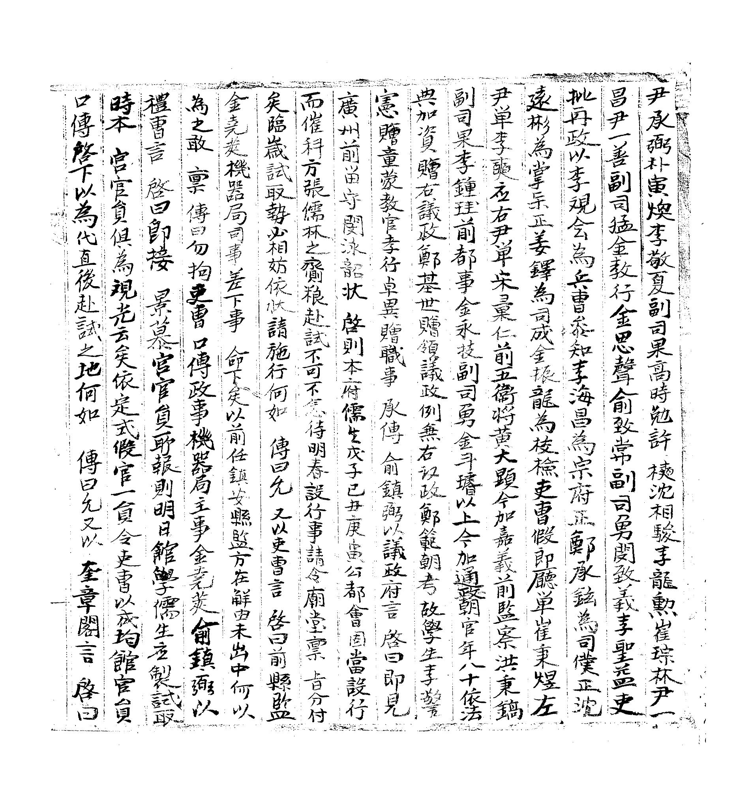

1891년 『승정원일기』 — 이경헌 선생의 효행 증직
「128년의 기록과 보도」 · 기록 024 — 옛 기록으로 읽는 함평 이동범가
「128년의 기록과 보도」는 함평 이동범가와 관련된 옛 신문·관보·공문서와 기관 기록, 언론 보도를 원문(판독이 어려운 자료는 판독 가능한 부분)과 함께 소개하는 게시판입니다.
각 글은 기록에서 확인되는 사실과 그 기록만으로는 확인할 수 없는 내용을 나누어 적습니다.

이 기록은
석암 이동범 선생의 조부 이경헌(李警憲, 1825~1855) 선생에게 돌아가신 뒤 관직이 내려진 기록입니다. 『함평이씨대동보』의 이경헌 선생 항목에는 '교관(敎官)' 등이 적혀 있습니다. 이 기록은 그중 '교관'과 관련된 정부 기록입니다.
원문 (발췌)
故學生李警憲, 贈童蒙敎官, 孝行卓異贈職事, 承傳。
현대어 풀이
고(故) 학생 이경헌에게 동몽교관을 추증한다. 효행이 특별히 뛰어나 관직을 추증하는 일로 왕명을 받들어 전한다.
기록에서 확인되는 사실
1891년(음력 1890년 12월) 조정이 이경헌 선생에게 동몽교관을 추증했습니다. 추증 사유는 '효행이 특별히 뛰어남(孝行卓異)'입니다.
해당 기록에는 '학생(學生)'으로 표기되어 있습니다. 학생은 관직이 없는 선비를 가리키는 말이지만, 이 기록만으로 생전 이력 전체를 단정하지는 않습니다.
이 기록만으로 확인할 수 없는 것
『대동보』의 '교관'이 이 추증만을 가리키는지
효행의 구체적 내용
추증을 누가 청했는지 (돌아가신 지 약 35년 뒤의 일입니다)
『대동보』에 함께 적힌 '조봉대부(朝奉大夫, 종4품 품계)'의 근거. 동몽교관과 조봉대부가 어떤 관계로 기재되었는지는 확인하지 못했습니다.
함께 볼 글
『승정원일기』 고종 27년 12월 23일. 국사편찬위원회 승정원일기 DB, 서울대학교 규장각한국학연구원 원본.
『함평이씨대동보』(1989년 간행) 권8 효우공파 779쪽; 같은 내용 온라인 족보 출력본 권11 1080쪽.
이 기록과 관련된 자료(옛 사진, 문서, 신문 스크랩 등)를 갖고 계신 분은 블로그 쪽지로 알려 주시면 감사하겠습니다. 전체 연표: 128년의 기록과 보도 — 연표
원문 보기
네이버 블로그 「128년의 기록과 보도」 기록 024: blog.naver.com/congcongyi/224483231788
영문 페이지: Record 024 (English)
기록과 보도 연표: records.html · 연재 목차: index.html